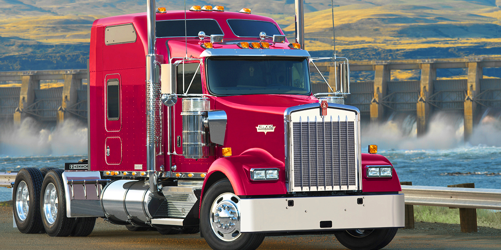
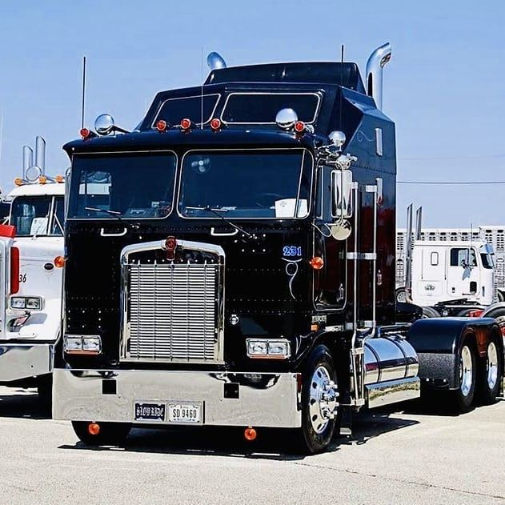
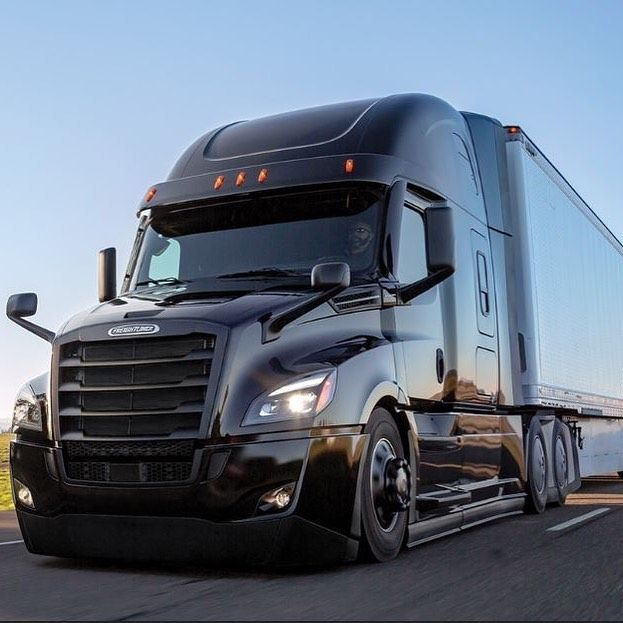
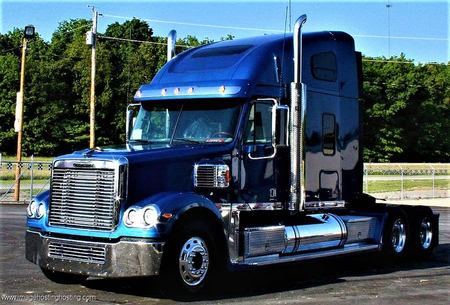
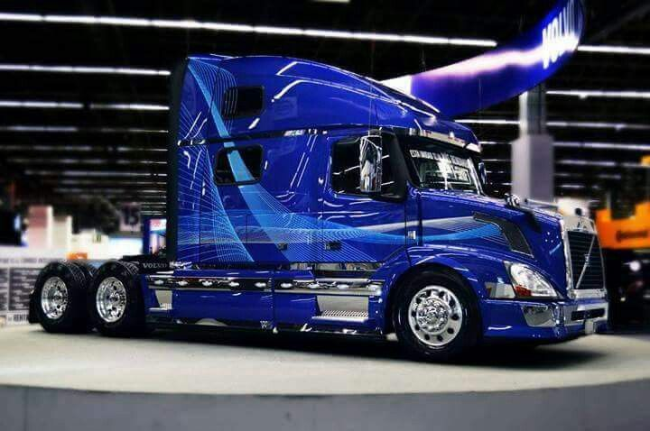
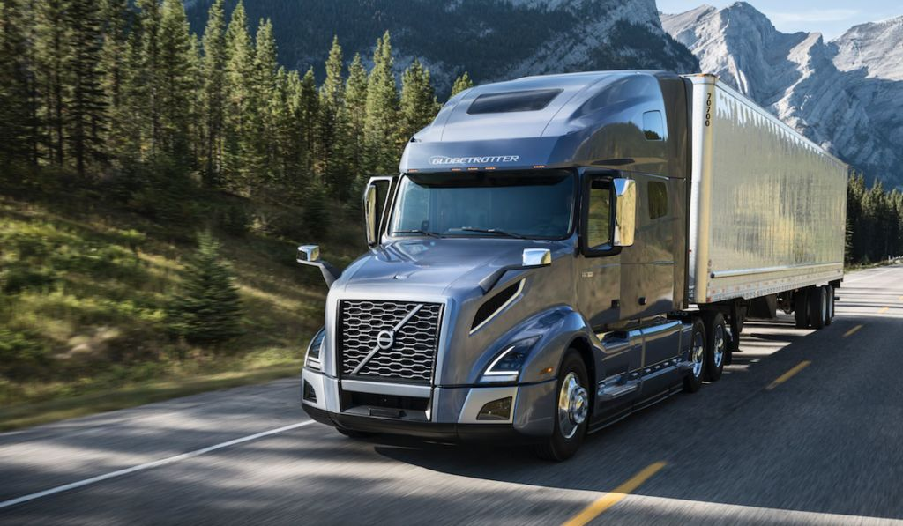
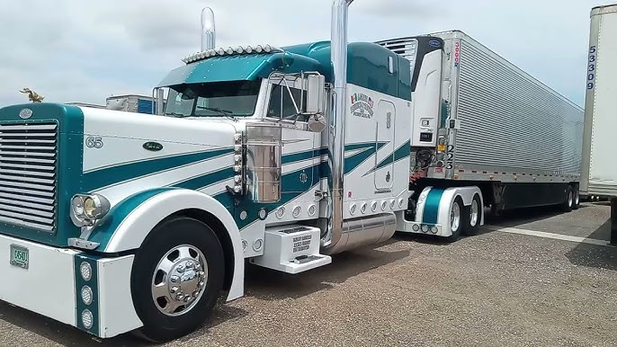
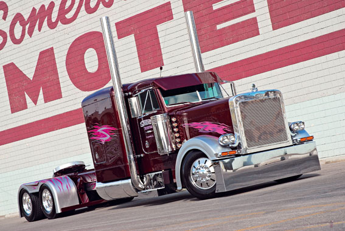

Un trailer es un camión grande que se utiliza para transportar mercancía de un lugar a otro. Estos vehículos son muy importantes para el comercio porque permiten mover productos a largas distancias de forma eficiente.
Un trailer es un camión grande que se utiliza para transportar mercancía de un lugar a otro. Estos vehículos son muy importantes para el comercio porque permiten mover productos a largas distancias de forma eficiente.
Se usa para transportar productos generales como cajas, muebles o ropa.
Sirve para transportar alimentos que necesitan mantenerse fríos como carne o lácteos.
Se utiliza para transportar líquidos como gasolina, agua o productos químicos.
Se usa para transportar maquinaria pesada o materiales de construcción.
Los trailers son fundamentales para la economía porque transportan productos que usamos todos los días. Gracias a ellos se pueden distribuir alimentos, materiales de construcción y muchos otros productos.








REALIZADO POR YAZMANI LUCIO PEÑA